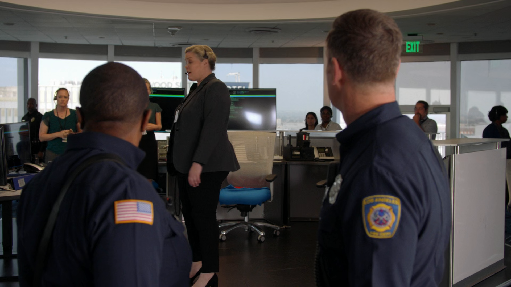
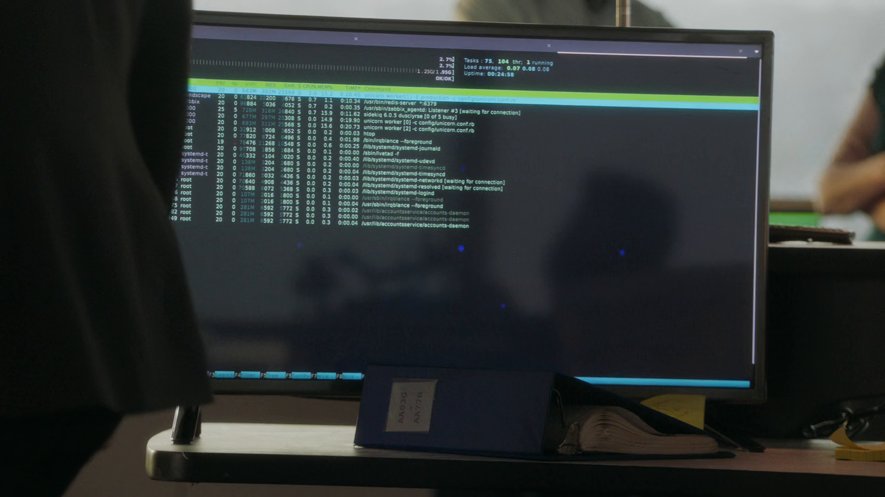
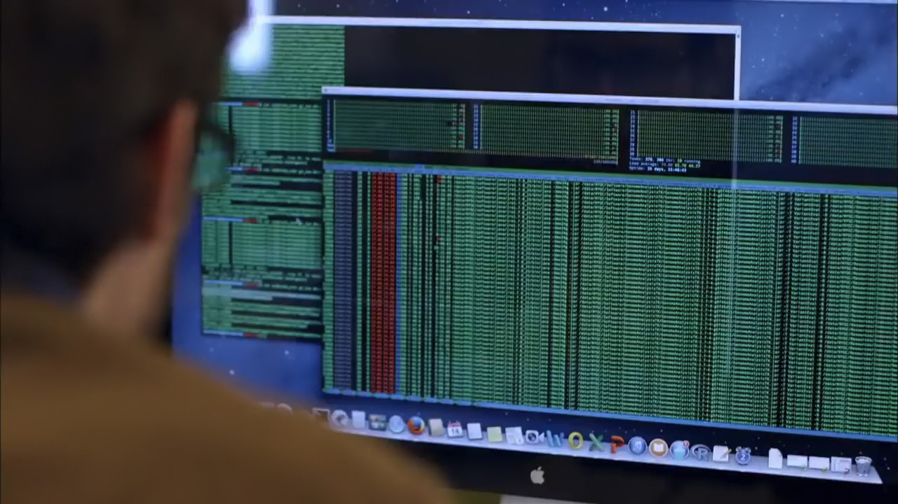
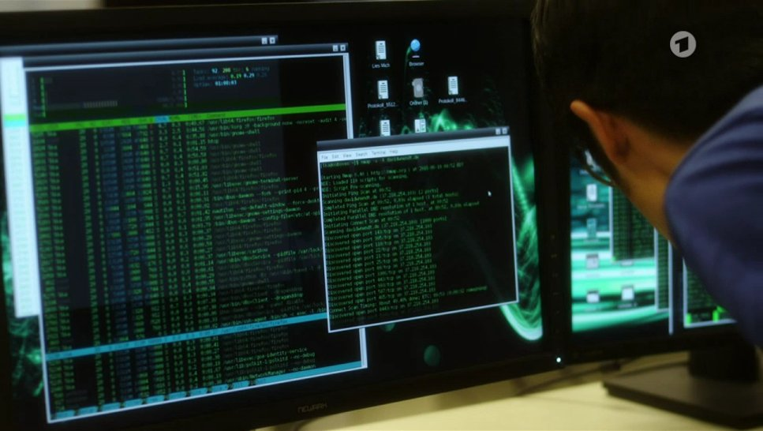
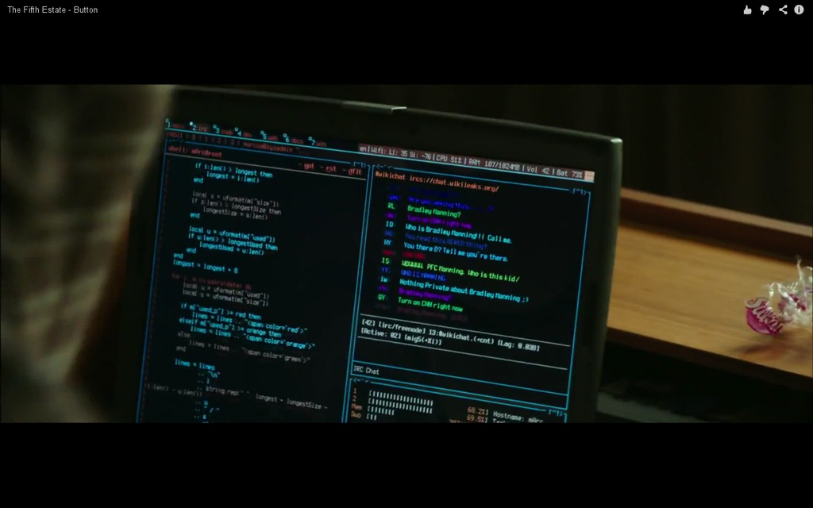

htop in popular culture :-D
To my complete amazement, htop has been featured in a few pieces of media over the years. It always makes my day when someone emails me telling they've spotted htop in a film or TV show.
At Hugo Gualandi's suggestion, here's a page with some of these sightings. Please send an email notification if you find others - thanks!
(2022) 9-1-1 Season 5 Episode 1, about 27 minutes in, just when the Air Traffic Control computers reboot after the cyber attack, the first thing that loads is htop. They also seem to be running a Zabbix Agent, Sidekiq, Redis and the Unicorn web server on a systemd-based distribution. Thanks to Chris Clemson!  
(2021) The America's Cup is probably the most prestigious yacht sailing tournament in the world. Even the qualifiers are spectacular and their broadcasts watched by millions. So they need some spectacular technology footage to visualize how technical this sport is. Thanks to Alexander Wessel, see htop in action during the opening day of the cup qualifiers in Auckland, New Zealand. Another video shows more detail shots of htop and features some sound bites from the user brent (Brent Russell, Race Management System - Technical Director) in the screenshot.

Finding Your Roots (2017), according to Wikipedia is "a documentary television series" on the American TV channel PBS. Amazingly, htop makes an appearance in an episode on Bernie Sanders and Larry David! Thanks to Julians for the link!
{kind=link}
Tatort (2017), according to Wikipedia is "a German language police procedural television series that has been running continuously since 1970 with some 30 feature-length episodes per year, which makes it the longest-running German TV-drama." Thanks to Jan-Erik for the link!
{kind=link}
"Watch Dogs 2" (2016), video game. htop appears in the character's phone. Thanks to @digital_night_owl for the link!

Video for Jean-Michel Jarre's "Oxygene 17" (2016). Thanks to Chris Clemson for the screenshot!

"Mr. Robot" (2015), TV series. It's clearly a Hollywood mockup and not the actual software, but it's pretty evident they were going for the htop look. :) Thanks to Hugo Gualandi for the screenshot!

"The Fifth Estate" (2013), movie. Another Hollywood mockup, but the trademark look of the meters is there. :) Thanks to Pierre Chapuis for the link!
{kind=link}